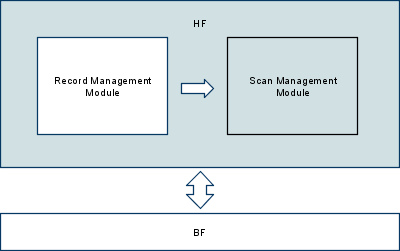

K25 - HF - SMM & HF
Πληροφορική & Τηλεπικοινωνίες K25
Ανάπτυξη Λογισμικού
Χειμερινό Εξάμηνο 2009-10
Καθηγητής Γιάννης Ιωαννίδης
Μέρος 2ο, 2/2: Μονάδα διαχείρισης σαρώσεων και Επίπεδο αρχείου εγγραφών
(Ημερομηνία Παράδοσης: Τρίτη, 8/12/2009, 17:00)

Μονάδα διαχείρισης σαρώσεων (Scan Management Module)
Εισαγωγή
Η μονάδα διαχείρισης σαρώσεων του επιπέδου διαχείρισης αρχείων σωρού
(HF) είναι υπεύθυνο για την αναζήτηση εγγραφών από ανοιχτά αρχεία, οι
οποίες ικανοποιούν ορισμένες συνθήκες. Περιλαμβάνει συναρτήσεις που
αφορούν τη δημιουργία μιας νέας αναζήτησης σε ένα αρχείο, την αναζήτηση
εγγραφών που ικανοποιούν τις συνθήκες, το κλείσιμο αναζητήσεων κ.λπ.
Συγκεκριμένα, φροντίζει ώστε να ξεκινάει μία νέα αναζήτηση σε κάποιο
ανοιχτό αρχείο, με βάση ορισμένα κριτήρια τα οποία δίνονται εξ αρχής
και δεν διαφοροποιούνται κατά τη διάρκεια της αναζήτησης. Γίνεται
αναζήτηση μέσα στο αρχείο σωρού και επιστρέφονται οι εγγραφές που
ικανοποιούν το αντίστοιχο κριτήριο. Μπορείτε να θεωρήσετε ότι ανά πάσα
στιγμή υπάρχουν το πολύ MAXSCANS = 20 αναζητήσεις.
Η εργασία αυτή είναι ομαδική. Η γλώσσα υλοποίησης είναι η C.
Ρουτίνες Υλοποίησης της μονάδας διαχείρισης σαρώσεων
SMM_Init();
int SMM_Init(void);
Η ρουτίνα αυτή χρησιμοποιείται για να αρχικοποιήσετε τις όποιες
καθολικές (global) εσωτερικές δομές δεδομένων αποφασίσετε ότι
χρειάζεστε να έχετε. Δεν έχει καμία παράμετρο εισόδου και δεν παράγει
καμία έξοδο.
SMM_OpenFileScan();
int SMM_OpenFileScan(
int fileDesc, /* αριθμός που αντιστοιχεί σε ανοιχτό αρχείο */
int recordSize, /* μέγεθος κάθε εγγραφής του αρχείου */
char attrType, /* τύπος πεδίου: 'c', 'i', ή 'f' */
int attrLength, /* μέγεθος πεδίου σε μπάιτ: 4 για 'i' ή 'f', 1-255 για 'c' */
int attrOffset, /* απόσταση πεδίου σε μπάιτ από την αρχή της εγγραφής */
int op, /* τελεστής σύγκρισης */
char *value /* δείκτης προς τιμή για σύγκριση */
);
Η ρουτίνα αυτή ξεκινά μια σάρωση των εγγραφών του αρχείου με αναγνωριστικό αριθμό fileDesc. Η σάρωση αφορά εγγραφές που έχουν στο σημείο (πεδίο) που προσδιορίζεται από την τιμή attrOffset τιμές που ικανοποιούν την καθορισμένη συνθήκη. Το μέγεθος της εγγραφής είναι recordSize. Αν η παράμετρος value έχει μηδενικό δείκτη ως τιμή (null), τότε ξεκινά σάρωση όλων των εγγραφών ανεξαρτήτως των τιμών των παραμέτρων attrType, attrLength, attrOffset, και op. Ειδ' αλλοιώς, ο δείκτης value δείχνει στην τιμή με την οποία τα αντίστοιχα σημεία των εγγραφών πρέπει να συγκριθούν σύμφωνα με τον τελεστή op. Μια εγγραφή record ικανοποιεί τη συνθήκη της σάρωσης όταν πεδίο(record) op value, σύμφωνα με τα στοιχεία που δίνονται.
Σε περίπτωση ορθής λειτουργίας επιστρέφεται από τη ρουτίνα ένας μη
αρνητικός ακέραιος που αντιπροσωπεύει το αναγνωριστικό της σάρωσης και
αντιστοιχεί στη θέση ενός πίνακα που θα διατηρείτε στη μνήμη με
πληροφορίες για όλες τις ενεργές σαρώσεις. Μπορείτε να υποθέσετε ότι
οποιαδήποτε στιγμή δεν θα υπάρχουν περισσότερες από MAXSCANS
= 20 ενεργές σαρώσεις. Αν ο πίνακας είναι γεμάτος, τότε η ρουτίνα
επιστρέφει κάποιον κωδικό σφάλματος του επιπέδου HF. Η παράμετρος op καθορίζει τον τρόπο με τον οποίο η τιμή που δείχνει ο δείκτης value πρέπει να συγκριθεί με τις προσδιορισμένες τιμές από τις εγγραφές. Οι διαφορετικές επιλογές για την τιμή της παραμέτρου op είναι οι εξής:
-
για EQUAL (δηλαδή, attribute = value)
-
για LESS THAN (δηλαδή, attribute < value)
-
για GREATER THAN (δηλαδή, attribute > value)
-
για LESS THAN OR EQUAL (δηλαδή, attribute <= value)
-
για GREATER THAN OR EQUAL (δηλαδή, attribute >= value)
-
για NOT EQUAL (δηλαδή, attribute != value)
SMM_FindNextRec();
int SMM_FindNextRec(
int scanDesc, /* αναγνωριστικός αριθμός που αντιστοιχεί σε ενεργή σάρωση */
char *record /* δείκτης προς τα περιεχόμενα της εγγραφής που ζητήθηκε */
);
Η ρουτίνα αυτή ανακτά ένα αντίγραφο της επόμενης εγγραφής που συναντά κατά τη σάρωση με αναγνωριστικό σάρωσης scanDesc και που ικανοποιεί τη συνθήκη της σάρωσης. Αν πετύχει, τότε επιστρέφει το αντίστοιχο αναγνωριστικό εγγραφής (recId) ενώ τα περιεχόμενα της ίδιας της εγγραφής μπαίνουν (αντιγράφονται) στο χώρο που δείχνει ο δείκτης record.
Ειδ' αλλοιώς, η ρουτίνα επιστρέφει HFE_EOF εάν έχουμε φτάσει στο τέλος
του αρχείου, ή κάποιον άλλον κωδικό σφάλματος εάν κάτι δεν λειτουργήσει
όπως πρέπει.
Παρατήρηση: Πληροφορίες όπως το αναγνωριστικό της εγγραφής που είχε
επιστρέψει η σάρωση την προηγούμενη φορά, το αρχείο που είναι ανοιχτό
λόγω αυτής της σάρωσης, κτλ., διατηρούνται στον πίνακα με τα
απαιτούμενα για κάθε ενεργή σάρωση. Εσείς θα αποφασίσετε τα ακριβή
περιεχόμενα του πίνακα αυτού σύμφωνα με τις ανάγκες της υλοποίησής σας.
SMM_CloseFileScan();
int SMM_CloseFileScan(
int scanDesc /* αριθμός που αντιστοιχεί σε ενεργή σάρωση */
);
Η ρουτίνα αυτή τερματίζει τη σάρωση με αναγνωριστικό σάρωσης scanDesc. Αν πετύχει, τότε επιστρέφει HFE_OK, ειδ' αλλοιώς, κάποιον κωδικό σφάλματος.
SMM_hasOpenScans();
BOOLEAN SMM_hasOpenScans(
int fileDesc /* αριθμός που αντιστοιχεί σε ανοιχτό αρχείο */
);
Η ρουτίνα αυτή επιστρέφει TRUE αν το αρχείο με αναγνωριστικό fileDesc έχει ενεργές σαρώσεις
ειδ' αλλοιώς FALSE.
Επίπεδο αρχείου εγγραφών HF (Heap File)
Εισαγωγή
Το επίπεδο αρχείων σωρού παρέχει σε υψηλότερα επίπεδα μια διεπαφή προγραμματισμού για χρήση τέτοιου τύπου αρχείων (HF).
Τα αρχεία σωρού είναι ένα επίπεδο υψηλότερα από τα αρχεία τύπου μπλοκ
(BF), γι' αυτό και χρησιμοποιούν τις συναρτήσεις του επιπέδου αυτού για
να πραγματοποιήσουν τη λειτουργικότητά τους. Η βασική τους
διαφοροποίηση είναι ότι τα HF αρχεία είναι υπεύθυνα για τη διαχείριση
εγγραφών, τόσο στο σύνολο του αρχείου όσο και σε κάθε block χωριστά.
Έτσι, το επίπεδο αυτό περιλαμβάνει συναρτήσεις που αφορούν την
εισαγωγή, διαγραφή και αναζήτηση εγγραφών βάσει συγκεκριμένων κριτηρίων.
Το HF επίπεδο ενσωματώνει ουσιαστικά τη λειτουργικότητα του RMM (Record
Management Module) και του SMM (Scan Management Module) και είναι
υπεύθυνο ώστε να καλεί σωστά τις αντίστοιχες συναρτήσεις με τον τρόπο
που χρειάζεται. Συνεπώς, το μεγαλύτερο μέρος της λειτουργικότητας των
HF συναρτήσεων το έχετε ήδη υλοποιήσει από το RMM και το SMM τμήμα της
εργασίας αντίστοιχα.
Η εργασία αυτή είναι ομαδική. Η γλώσσα υλοποίησης είναι η C.
Ρουτίνες Υλοποίησης του επιπέδου HF
void HF_Init(void);
void HF_Init(void);
Η συνάρτηση αυτή καλεί τις αντίστοιχες Init() συναρτήσεις του RMM και
SMM επιπέδου για να αρχικοποιήσει τις όποιες εσωτερικές καθολικές
(global) μεταβλητές χρησιμοποιούνται. Δεν δέχεται καμία παράμετρο ως
είσοδο και δεν παράγει καμία έξοδο.
int HF_CreateFile()
int HF_CreateFile(
char *fileName /* όνομα αρχείου προς δημιουργία */
)
Η ρουτίνα αυτή δημιουργεί ένα HF αρχείο με όνομα filename,
χρησιμοποιώντας και τις συναρτήσεις του BF επιπέδου. Επιστρέφει HFE_OK
ή αντίστοιχο κωδικό σφάλματος αν κάτι δεν πάει καλά.
int HF_DestroyFile()
int HF_DestroyFile(
char *fileName /* όνομα αρχείου προς διαγραφή */
);
Η ρουτίνα αυτή διαγράφει ένα HF αρχείο με όνομα filename,
χρησιμοποιώντας και τις συναρτήσεις του BF επιπέδου. Για τη διαγραφή
του αρχείου, δεν πρέπει να υπάρχουν ανοιχτές σαρώσεις σε αυτό.
Επιστρέφει HFE_OK ή αντίστοιχο κωδικό σφάλματος.
int HF_OpenFile()
int HF_OpenFile(
char *fileName /* όνομα αρχείου προς άνοιγμα */
);
Η ρουτίνα αυτή ανοίγει το HF αρχείο με όνομα filename χρησιμοποιώντας
συναρτήσεις του επιπέδου διαχείρισης αρχείων μπλοκ (BF). Επιστρέφει τον
αναγνωριστικό αριθμό αρχείου όπως αυτός δίνεται από το BF επίπεδο ή τον
αντίστοιχο κωδικό σφάλματος σε περίπτωση λάθους.
int HF_CloseFile()
int HF_CloseFile(
int fileDesc /* αναγνωριστικός αριθμός για το HF επίπεδο */
);
Η ρουτίνα αυτή κλείνει το HF αρχείο με αναγνωριστικό αριθμό fileDesc,
καλώντας τις αντίστοιχες συναρτήσεις και του BF επιπέδου. Για το
κλείσιμο του αρχείου δεν πρέπει να υπάρχει ανοιχτή σάρωση που να το
αφορά. Επιστρέφει HFE_OK αν το αρχείο κλείσει κανονικά ή αντίστοιχο
κωδικό σφάλματος.
int HF_InsertRec()
int HF_InsertRec(
int fileDesc, /* αναγνωριστικός αριθμός ανοιχτού αρχείου */
char *record, /* ενδιάμεση μνήμη εγγραφής προς εισαγωγή */
int recordSize /* μέγεθος της εγγραφής στο αρχείο */
);
Εισάγει στο ανοικτό αρχείο με αναγνωριστικό αριθμό fileDesc ένα
αντίγραφο της εγγραφής που είναι αποθηκευμένη στην ενδιάμεση μνήμη
record. Η εγγραφή αυτή έχει μέγεθος recordSize, όπως και κάθε άλλη
εγγραφή του αρχείου αυτού. Η εγγραφή αποθηκεύεται στην πρώτη θέση που
υπάρχει διαθέσιμη μέσα στο αρχείο. Επιστρέφεται ένας μη αρνητικός
ακέραιος που δηλώνει τη θέση όπου τοποθετήθηκε η συγκεκριμένη εγγραφή
και είναι ο αναγνωριστικός αριθμός εγγραφής. Σε περίπτωση σφάλματος
επιστρέφεται ο αντίστοιχος κωδικός λάθους.
int HF_DeleteRec()
int HF_DeleteRec(
int fileDesc, /* αναγνωριστικός αριθμός ανοιχτού αρχείου */
int recId, /* αναγνωριστικός αριθμός εγγραφής */
int recordSize /* μέγεθος της εγγραφής στο αρχείο */
);
Η ρουτίνα αυτή διαγράφει από το ανοιχτό αρχείο με αναγνωριστικό αριθμό
fileDesc την εγγραφή με αναγνωριστικό αριθμό recId. Κάθε εγγραφή στο
αρχείο έχει μέγεθος recordSize. Η εγγραφή πρέπει να υπάρχει προκειμένου
να διαγραφεί.
int HF_GetFirstRec()
int HF_GetFirstRec(
int fileDesc, /* αναγνωριστικός αριθμός ανοιχτού αρχείου */
char *record, /* ενδιάμεση μνήμη εγγραφής προς ανάγνωση */
int recordSize /* μέγεθος της εγγραφής στο αρχείο */
);
Η ρουτίνα αυτή διαβάζει την πρώτη έγκυρη εγγραφή που υπάρχει στο
ανοιχτό αρχείο με αναγνωριστικό αριθμό fileDesc. Κάθε εγγραφή του
αρχείου έχει μέγεθος recordSize, ενώ η εγγραφή αντιγράφεται στην
ενδιάμεση μνήμη record που δίνεται ως παράμετρος. Η συνάρτηση
επιστρέφει ένα θετικό ακέραιο που αντιστοιχεί στον αναγνωριστικό αριθμό
εγγραφής του επιπέδου HF ή κάποιο κωδικό σφάλματος του HF επιπέδου σε
περίπτωση λάθους.
int HF_GetNextRec()
int HF_GetNextRec(
int fileDesc, /* αναγνωριστικός αριθμός ανοιχτού αρχείου */
int recId, /* αναγνωριστικός αριθμός εγγραφής */
char *record, /* ενδιάμεση μνήμη εγγραφής προς ανάγνωση */
int recordSize /* μέγεθος της εγγραφής στο αρχείο */
);
Η ρουτίνα αυτή διαβάζει στην ενδιάμεση μνήμη record την πρώτη έγκυρη εγγραφή μετά την εγγραφή με αναγνωριστικό recId που αφορά στο ανοιχτό αρχείο με αναγνωριστικό αριθμό (ανοίγματος) fileDesc. Κάθε εγγραφή στο αρχείο αυτό έχει μέγεθος recordSize. Δεν πραγματοποιείται κανένας έλεγχος για την εγκυρότητα του recId.
Η ρουτίνα επιστρέφει ένα θετικό ακέραιο που αντιστοιχεί στον
αναγνωριστικό αριθμό της εγγραφής που μόλις διαβάστηκε αν όλα πήγαν
καλά ή κάποιο κωδικό σφάλματος του HF επιπέδου σε περίπτωση λάθους.
int HF_GetThisRec()
int HF_GetThisRec(
int fileDesc, /* αναγνωριστικός αριθμός ανοιχτού αρχείου */
int recId, /* αναγνωριστικός αριθμός εγγραφής */
char *record, /* ενδιάμεση μνήμη εγγραφής προς ανάγνωση */
int recordSize /* μέγεθος της εγγραφής στο αρχείο */
);
Η ρουτίνα αυτή διαβάζει στην ενδιάμεση μνήμη record την εγγραφή με αναγνωριστικό αριθμό εγγραφής recId από το ανοιχτό αρχείο με αναγνωριστικό αριθμό (ανοίγματος) fileDesc. Κάθε εγγραφή στο αρχείο έχει μέγεθος recordSize.
Η συνάρτηση επιστρέφει HFE_OK αν όλα πήγαν καλά ή κάποιο κωδικό σφάλματος σε περίπτωση λάθους.
int HF_OpenFileScan()
int HF_OpenFileScan(
int fileDesc, /* αριθμός που αντιστοιχεί σε ανοιχτό αρχείο */
int recordSize, /* μέγεθος κάθε εγγραφής του αρχείου */
char attrType, /* τύπος πεδίου: 'c', 'i', ή 'f' */
int attrLength, /* μέγεθος πεδίου σε μπάιτ: 4 για 'i' ή 'f', 1-255 για 'c' */
int attrOffset, /* απόσταση πεδίου σε μπάιτ από την αρχή της εγγραφής */
int op, /* τελεστής σύγκρισης */
char *value /* δείκτης προς τιμή για σύγκριση */
);
Η ρουτίνα αυτή ανοίγει μια σάρωση εγγραφών στο ανοιχτό αρχείο με αναγνωριστικό αριθμό (ανοίγματος) fileDesc. Κάθε εγγραφή στο αρχείο έχει μέγεθος recordSize. Η σάρωση που πραγματοποιείται, ψάχνει για εγγραφές στο HF αρχείο οι οποίες ικανοποιούν τη συνθήκη που ορίζεται από τα πεδία attrType, attrLength, attrOffset, op και value.
Ο τρόπος με τον οποίο οι παράμετροι αυτές χρησιμοποιούνται είναι
πανομοιότυπος με αυτόν της SMM_OpenFileScan(). Για το λόγο αυτό
ανατρέξτε στην αντίστοιχη ρουτίνα για να δείτε οι πληροφορίες αυτές
χρησιμοποιούνται.
Η συνάρτηση επιστρέφει έναν μικρό θετικό ακέραιο που πρόκειται για τον
αναγνωριστικό αριθμό της ανοιχτής σάρωσης αν όλα πήγαν καλά, ενώ
επιστρέφει τον αντίστοιχο κωδικό σφάλματος του HF επιπέδου σε περίπτωση
λάθους.
int HF_FindNextRec()
int HF_FindNextRec(
int scanDesc, /* αναγνωριστικός αριθμός ανοιχτής σάρωσης */
char *record /* ενδιάμεση μνήμη για την εγγραφή */
);
Η ρουτίνα αυτή επιστρέφει την επόμενη εγγραφή που ικανοποιεί τα κριτήρια της ανοιχτής σάρωσης με αναγνωριστικό αριθμό scanDesc. Η εγγραφή αποθηκεύεται στην ενδιάμεση μνήμη record που δίνεται ως όρισμα. Η συνάρτηση επιστρέφει τον αναγνωριστικό αριθμό εγγραφής recId της
εγγραφής που ικανοποιεί την συνθήκη της ανοιχτής σάρωσης σε περίπτωση
που όλα πάνε καλά, διαφορετικά επιστρέφει τον αντίστοιχο κωδικό
σφάλματος HF επιπέδου σε περίπτωση σφάλματος.
int HF_CloseFileScan()
int HF_CloseFileScan(
int scanDesc /* αναγνωριστικός αριθμός ανοιχτής σάρωσης */
);
Η ρουτίνα αυτή κλείνει την ανοιχτή σάρωση με αναγνωριστικό αριθμό scanDesc.
Για το σκοπό αυτό χρησιμοποιεί την αντίστοιχη συνάρτηση του SMM
επιπέδου. Η συνάρτηση επιστρέφει HFE_OK αν όλα πήγαν καλά ενώ
επιστρέφει τον αντίστοιχο κωδικό σφάλματος σε περίπτωση λάθους.
HF_PrintError()
void HF_PrintError(
char *errString /* κείμενο για εκτύπωση */
);
Η ρουτίνα τυπώνει το κείμενο που δείχνει η παράμετρος errString,
και μετά τυπώνει το μήνυμα που αντιστοιχεί στο τελευταίο σφάλμα που
προέκυψε από οποιαδήποτε από τις ρουτίνες του επιπέδου HF. Για τον
σκοπό αυτό, η ρουτίνα αυτή χρησιμοποιεί μία καθολική (global) μεταβλητή
HF_errno η οποία αποθηκεύει πάντα τον κωδικό του πλέον πρόσφατου
σφάλματος. Ο κωδικός αυτός σφάλματος πρέπει πάντα να ενημερώνεται σωστά
σε όλες τις άλλες ρουτίνες. Η ρουτίνα αυτή δεν έχει δική της τιμή
επιστροφής.
 Σχολιασμός, Έλεγχος Σφαλμάτων, και Γενική Μορφοποίηση
Σχολιασμός, Έλεγχος Σφαλμάτων, και Γενική Μορφοποίηση
Όπως πάντοτε, αναμένεται καλός σχολιασμός του προγράμματος, και
εσωτερικός (ανάμεσα στις γραμμές κώδικα) και εξωτερικός (στην αρχή κάθε
ρουτίνας). Ένας γενικός κανόνας είναι να σχολιάζετε τα προγράμματά σας
σαν να πρόκειται να τα δώσετε σε κάποιον άλλον ο οποίος θα τα
επεκτείνει και ο οποίος δεν έχει ιδέα για το τι κάνατε όταν τα γράφατε
(και δεν μπορεί ούτε να σας βρει να σας ρωτήσει).
Επίσης, θα πρέπει να ελέγχετε για διάφορα σφάλματα που μπορούν να
προκύψουν και να βεβαιωθείτε ότι ο κώδικάς σας τερματίζει ομαλά, με
μηνύματα που έχουν νόημα, σε όλες τις εισόδους που ικανοποιούν την
παραπάνω περιγραφή.
Διαδικαστικές Λεπτομέρειες
Το τί ακριβώς θα παραδώσετε, πού θα βρείτε τα αρχεία με τα οποία
θα ελέγξετε τελικά το πρόγραμμά σας, κτλ., θα ανακοινωθεί σύντομα.
Τα προγράμματά σας θα πρέπει να δουλεύουν στα μηχανήματα του
τμήματος (είτε στα sun (Linux) είτε στα pc (Windows)) ώστε να μπορούν
να ελεγχθούν. Ακόμη και αν δουλέψετε σε δικούς σας υπολογιστές θα
πρέπει να βεβαιωθείτε ότι το τελικό αποτέλεσμα δουλεύει και εδώ τοπικά.
Η έκδοση της C που θα χρησιμοποιήσετε πρέπει να έχει ακέραιους των 4
bytes και να επιτρέπει αλλαγή ερμηνείας τύπου δεδομένων (type casting).